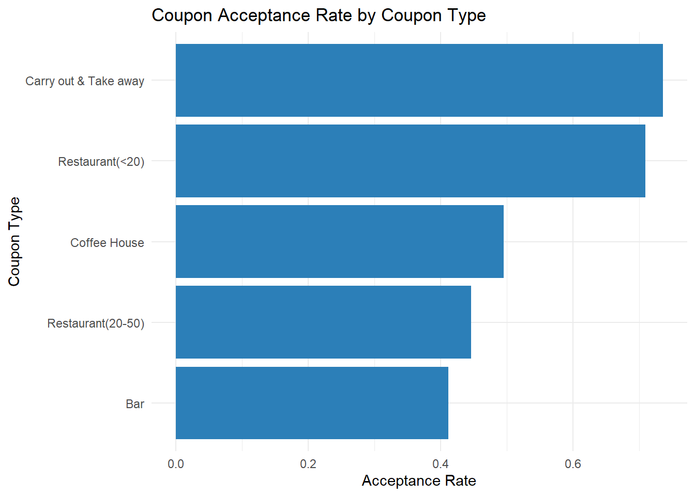
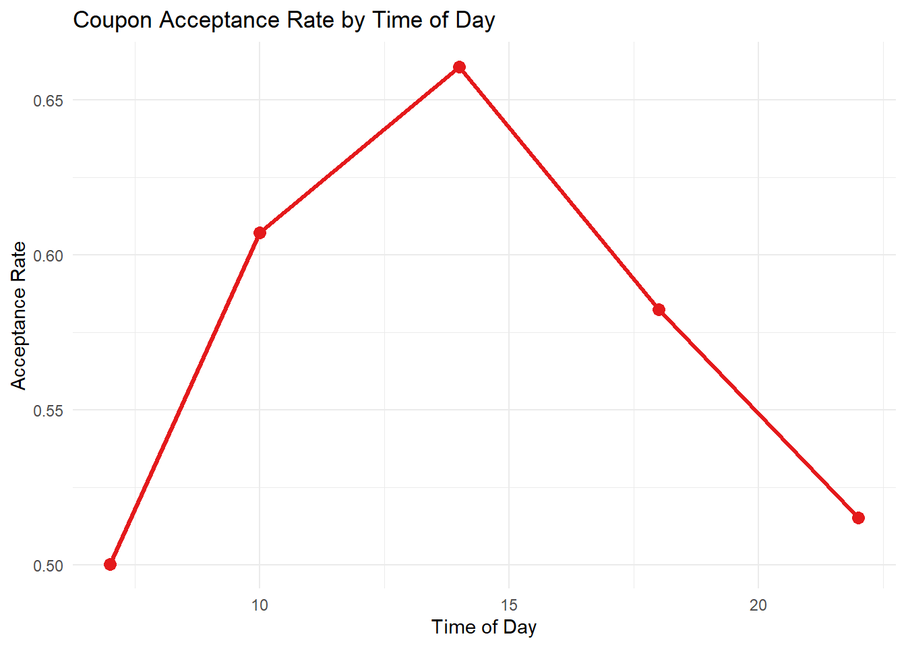
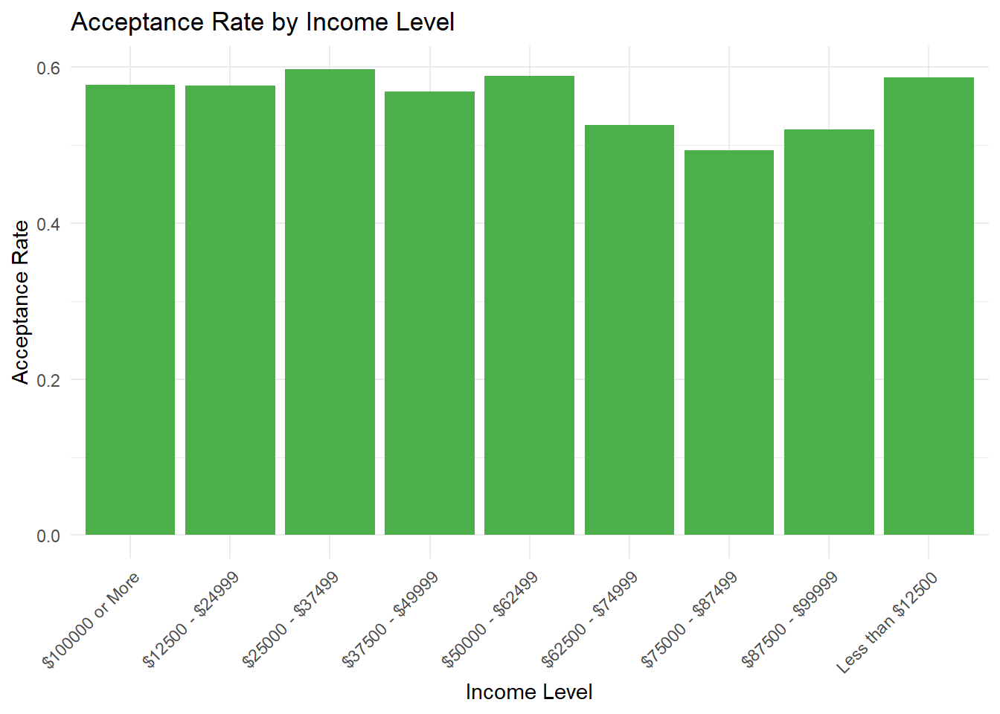
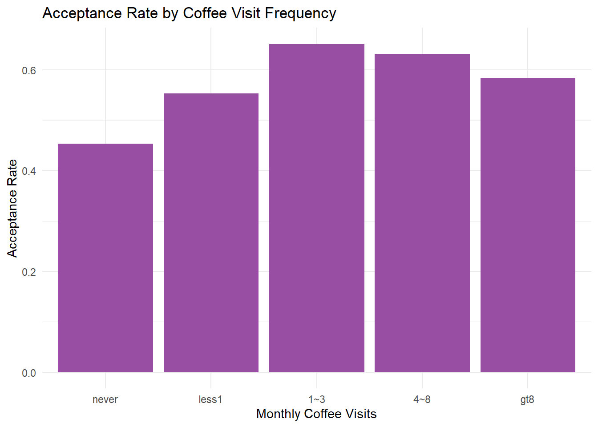
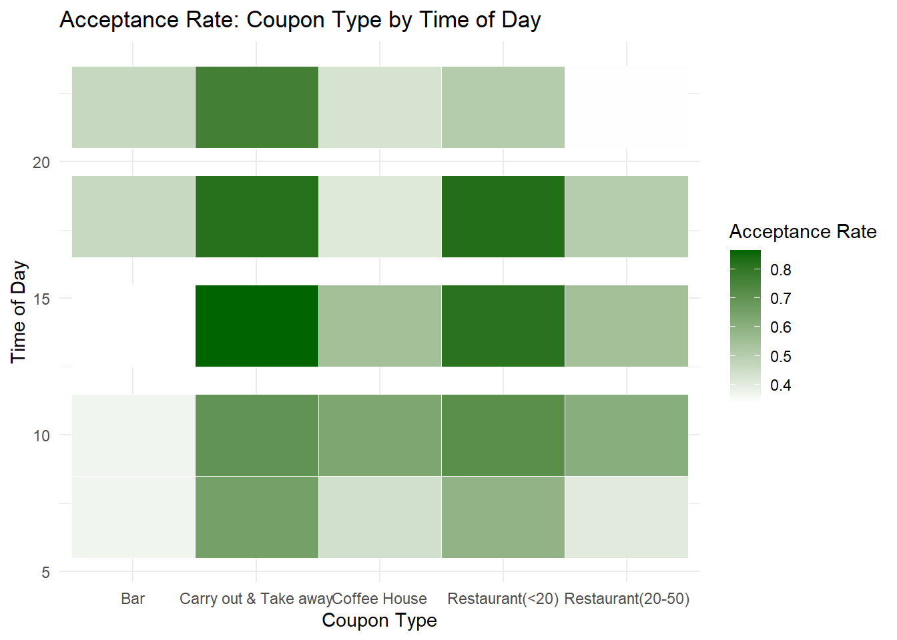

Code
library(tidyverse)
library(caret)
library(randomForest)
library(pROC)
library(ggplot2)
library(janitor)<—>
library(tidyverse)
library(caret)
library(randomForest)
library(pROC)
library(ggplot2)
library(janitor)### for installing packages also needed (" ,dependencies = TRUE, method = "wininet" ")
df <- read.csv("./dataset/coupons.csv")
glimpse(df)Rows: 12,684
Columns: 26
$ destination <chr> "No Urgent Place", "No Urgent Place", "No Urgent …
$ passanger <chr> "Alone", "Friend(s)", "Friend(s)", "Friend(s)", "…
$ weather <chr> "Sunny", "Sunny", "Sunny", "Sunny", "Sunny", "Sun…
$ temperature <int> 55, 80, 80, 80, 80, 80, 55, 80, 80, 80, 80, 55, 5…
$ time <chr> "2PM", "10AM", "10AM", "2PM", "2PM", "6PM", "2PM"…
$ coupon <chr> "Restaurant(<20)", "Coffee House", "Carry out & T…
$ expiration <chr> "1d", "2h", "2h", "2h", "1d", "2h", "1d", "2h", "…
$ gender <chr> "Female", "Female", "Female", "Female", "Female",…
$ age <chr> "21", "21", "21", "21", "21", "21", "21", "21", "…
$ maritalStatus <chr> "Unmarried partner", "Unmarried partner", "Unmarr…
$ has_children <int> 1, 1, 1, 1, 1, 1, 1, 1, 1, 1, 1, 1, 1, 1, 1, 1, 1…
$ education <chr> "Some college - no degree", "Some college - no de…
$ occupation <chr> "Unemployed", "Unemployed", "Unemployed", "Unempl…
$ income <chr> "$37500 - $49999", "$37500 - $49999", "$37500 - $…
$ car <chr> "", "", "", "", "", "", "", "", "", "", "", "", "…
$ Bar <chr> "never", "never", "never", "never", "never", "nev…
$ CoffeeHouse <chr> "never", "never", "never", "never", "never", "nev…
$ CarryAway <chr> "", "", "", "", "", "", "", "", "", "", "", "", "…
$ RestaurantLessThan20 <chr> "4~8", "4~8", "4~8", "4~8", "4~8", "4~8", "4~8", …
$ Restaurant20To50 <chr> "1~3", "1~3", "1~3", "1~3", "1~3", "1~3", "1~3", …
$ toCoupon_GEQ5min <int> 1, 1, 1, 1, 1, 1, 1, 1, 1, 1, 1, 1, 1, 1, 1, 1, 1…
$ toCoupon_GEQ15min <int> 0, 0, 1, 1, 1, 1, 1, 1, 1, 1, 0, 1, 1, 0, 1, 0, 1…
$ toCoupon_GEQ25min <int> 0, 0, 0, 0, 0, 0, 0, 0, 0, 0, 0, 0, 0, 0, 0, 0, 1…
$ direction_same <int> 0, 0, 0, 0, 0, 0, 0, 0, 0, 0, 0, 0, 0, 1, 0, 0, 0…
$ direction_opp <int> 1, 1, 1, 1, 1, 1, 1, 1, 1, 1, 1, 1, 1, 0, 1, 1, 1…
$ Y <int> 1, 0, 1, 0, 0, 1, 1, 1, 1, 0, 1, 1, 1, 1, 1, 0, 1…summary(df) destination passanger weather temperature
Length:12684 Length:12684 Length:12684 Min. :30.0
Class :character Class :character Class :character 1st Qu.:55.0
Mode :character Mode :character Mode :character Median :80.0
Mean :63.3
3rd Qu.:80.0
Max. :80.0
time coupon expiration gender
Length:12684 Length:12684 Length:12684 Length:12684
Class :character Class :character Class :character Class :character
Mode :character Mode :character Mode :character Mode :character
age maritalStatus has_children education
Length:12684 Length:12684 Min. :0.0000 Length:12684
Class :character Class :character 1st Qu.:0.0000 Class :character
Mode :character Mode :character Median :0.0000 Mode :character
Mean :0.4141
3rd Qu.:1.0000
Max. :1.0000
occupation income car Bar
Length:12684 Length:12684 Length:12684 Length:12684
Class :character Class :character Class :character Class :character
Mode :character Mode :character Mode :character Mode :character
CoffeeHouse CarryAway RestaurantLessThan20 Restaurant20To50
Length:12684 Length:12684 Length:12684 Length:12684
Class :character Class :character Class :character Class :character
Mode :character Mode :character Mode :character Mode :character
toCoupon_GEQ5min toCoupon_GEQ15min toCoupon_GEQ25min direction_same
Min. :1 Min. :0.0000 Min. :0.0000 Min. :0.0000
1st Qu.:1 1st Qu.:0.0000 1st Qu.:0.0000 1st Qu.:0.0000
Median :1 Median :1.0000 Median :0.0000 Median :0.0000
Mean :1 Mean :0.5615 Mean :0.1191 Mean :0.2148
3rd Qu.:1 3rd Qu.:1.0000 3rd Qu.:0.0000 3rd Qu.:0.0000
Max. :1 Max. :1.0000 Max. :1.0000 Max. :1.0000
direction_opp Y
Min. :0.0000 Min. :0.0000
1st Qu.:1.0000 1st Qu.:0.0000
Median :1.0000 Median :1.0000
Mean :0.7852 Mean :0.5684
3rd Qu.:1.0000 3rd Qu.:1.0000
Max. :1.0000 Max. :1.0000 Here, we load our csv dataset into a dataframe.
### Step 1: Data Cleaning ###
df <- clean_names(df)
#names(df) to see if everything is lowecase after the clean_names command
# Replace "nan" with NA
df[df == "nan"] <- NA
# Convert categorical variables to factor
df <- df %>%
mutate(across(where(is.character), as.factor))
##Need categorical variables to be stored as factors, not character strings. So we transformed all categorical text variables into categorical factors. ##
# Convert Target Variable to Factor
df$y <- as.factor(df$y)
#Why?
#Because:
# If y is numeric (0/1), some models treat it as regression.
# If it is factor → classification.
# Remove duplicates
df <- distinct(df)
# Check missing values
colSums(is.na(df)) destination passanger weather
0 0 0
temperature time coupon
0 0 0
expiration gender age
0 0 0
marital_status has_children education
0 0 0
occupation income car
0 0 0
bar coffee_house carry_away
0 0 0
restaurant_less_than20 restaurant20to50 to_coupon_geq5min
0 0 0
to_coupon_geq15min to_coupon_geq25min direction_same
0 0 0
direction_opp y
0 0 table(df$y)
0 1
5453 7157 prop.table(table(df$y))
0 1
0.4324346 0.5675654 #they return 0 1 and sum how many zeros and ones
#and the prop the same but perc in based total count results
#check if the dataset is imbalanced.
#This is extremely important for modeling quality.
table(df$car, useNA = "always")
12502
Car that is too old to install Onstar :D
21
crossover
21
do not drive
22
Mazda5
22
Scooter and motorcycle
22
<NA>
0 # remove car column #
library(tidyverse)
df <- df %>%
select(-car)
# remove car column #
# Transform the expiration values in hours #
library(dplyr)
library(stringr)
# Suppose your dataframe is called df and your column is 'expiration'
# Function to convert any single value to hours
convert_to_hours <- function(x) {
# Extract all number-unit pairs (works for compound like "1d 2h 30m")
matches <- str_match_all(x, "(\\d+\\.?\\d*)\\s*([a-zA-Z]+)")[[1]]
if(nrow(matches) == 0) return(NA_real_) # fallback if no match
total_hours <- 0
for(i in 1:nrow(matches)) {
num <- as.numeric(matches[i,2])
unit <- tolower(matches[i,3])
total_hours <- total_hours + switch(unit,
"m" = num / 60,
"h" = num,
"d" = num * 24,
"w" = num * 24 * 7,
NA_real_)
}
return(total_hours)
}
# Apply function to your whole column dynamically
df <- df %>%
mutate(
expiration_original = expiration, # backup column
expiration = vapply(expiration, convert_to_hours, numeric(1))
)
# Check result
head(df) destination passanger weather temperature time coupon
1 No Urgent Place Alone Sunny 55 2PM Restaurant(<20)
2 No Urgent Place Friend(s) Sunny 80 10AM Coffee House
3 No Urgent Place Friend(s) Sunny 80 10AM Carry out & Take away
4 No Urgent Place Friend(s) Sunny 80 2PM Coffee House
5 No Urgent Place Friend(s) Sunny 80 2PM Coffee House
6 No Urgent Place Friend(s) Sunny 80 6PM Restaurant(<20)
expiration gender age marital_status has_children education
1 24 Female 21 Unmarried partner 1 Some college - no degree
2 2 Female 21 Unmarried partner 1 Some college - no degree
3 2 Female 21 Unmarried partner 1 Some college - no degree
4 2 Female 21 Unmarried partner 1 Some college - no degree
5 24 Female 21 Unmarried partner 1 Some college - no degree
6 2 Female 21 Unmarried partner 1 Some college - no degree
occupation income bar coffee_house carry_away
1 Unemployed $37500 - $49999 never never
2 Unemployed $37500 - $49999 never never
3 Unemployed $37500 - $49999 never never
4 Unemployed $37500 - $49999 never never
5 Unemployed $37500 - $49999 never never
6 Unemployed $37500 - $49999 never never
restaurant_less_than20 restaurant20to50 to_coupon_geq5min to_coupon_geq15min
1 4~8 1~3 1 0
2 4~8 1~3 1 0
3 4~8 1~3 1 1
4 4~8 1~3 1 1
5 4~8 1~3 1 1
6 4~8 1~3 1 1
to_coupon_geq25min direction_same direction_opp y expiration_original
1 0 0 1 1 1d
2 0 0 1 0 2h
3 0 0 1 1 2h
4 0 0 1 0 2h
5 0 0 1 0 1d
6 0 0 1 1 2hdf_bckup <- df
#df <- df_bckup
# Transform the expiration values in hours #
# transform time to time hour numeric from AM/PM #
library(dplyr)
library(lubridate)
df <- df %>%
mutate(time_original = time,
time = hour(parse_date_time(time, orders = "I!p")))
# transform time to time hour numeric from AM/PM #
# check if a column is factor or not #
class(df$age)[1] "factor"df$age <- factor(df$age,
levels = c("below21","21","26","31","36","41","46","50plus"),
ordered = TRUE) #Age is numeric — not categorical. Otherwise the model treats age as categories instead of a continuous variable.
table(df$age, useNA = "always")
below21 21 26 31 36 41 46 50plus <NA>
544 2642 2548 2019 1317 1089 670 1781 0 #Age was treated as an ordinal variable since the dataset provides age groups rather than continuous values.
# replace "" with NAs and remove them
sapply(df[, c("bar",
"coffee_house",
"carry_away",
"restaurant_less_than20",
"restaurant20to50")],
function(x) table(x, useNA = "always")) bar coffee_house carry_away restaurant_less_than20 restaurant20to50
107 217 150 129 189
1~3 2468 3199 4645 5356 3266
4~8 1071 1779 4242 3553 728
gt8 348 1107 1572 1282 264
less1 3438 3362 1849 2071 6041
never 5178 2946 152 219 2122
<NA> 0 0 0 0 0freq_cols <- c("bar",
"coffee_house",
"carry_away",
"restaurant_less_than20",
"restaurant20to50")
df[freq_cols] <- lapply(df[freq_cols], function(x) {
x[x == ""] <- NA
x
})
df[freq_cols] <- lapply(df[freq_cols], droplevels) # drop unused levels pair with the above one next command
sapply(df[freq_cols], function(x) table(x, useNA = "always")) bar coffee_house carry_away restaurant_less_than20 restaurant20to50
1~3 2468 3199 4645 5356 3266
4~8 1071 1779 4242 3553 728
gt8 348 1107 1572 1282 264
less1 3438 3362 1849 2071 6041
never 5178 2946 152 219 2122
<NA> 107 217 150 129 189colSums(is.na(df)) # count NAs per column 100 - 200 per column so small percentage based ~5% so we can delete the rows destination passanger weather
0 0 0
temperature time coupon
0 0 0
expiration gender age
0 0 0
marital_status has_children education
0 0 0
occupation income bar
0 0 107
coffee_house carry_away restaurant_less_than20
217 150 129
restaurant20to50 to_coupon_geq5min to_coupon_geq15min
189 0 0
to_coupon_geq25min direction_same direction_opp
0 0 0
y expiration_original time_original
0 0 0 df <- na.omit(df) #delete rows "Observations with missing frequency values were removed due to their low proportion in the dataset (<5%)."
# We should convert frequency variables to ordered factors:
df[freq_cols] <- lapply(df[freq_cols], function(x) {
factor(x,
levels = c("never","less1","1~3","4~8","gt8"),
ordered = TRUE)
})
str(df$coffee_house) Ord.factor w/ 5 levels "never"<"less1"<..: 2 2 2 2 2 2 2 2 2 2 ...# drop the cols we kept for backup
df$expiration_original <- NULL
df$time_original <- NULL
# i will create two y y_numeric and y_factor the numeric will be for plotting and trends and y_factor will be the target variable for modeling (classification).
df <- df %>%
mutate(
y_numeric = as.numeric(as.character(y)),
y_factor = factor(y, levels = c(0,1))
)#2.1 Coupon Type vs Acceptance Rate (Core Business Insight)
df %>%
group_by(coupon) %>%
summarise(accept_rate = mean(y_numeric, na.rm = TRUE)) %>%
ggplot(aes(x = reorder(coupon, accept_rate), y = accept_rate)) +
geom_col(fill = "#2c7fb8") +
coord_flip() +
labs(title = "Coupon Acceptance Rate by Coupon Type",
x = "Coupon Type",
y = "Acceptance Rate") +
theme_minimal()
#2.2 Acceptance Rate by Time of Day (Behavioral Timing Insight)
df %>%
group_by(time) %>%
summarise(accept_rate = mean(y_numeric, na.rm = TRUE)) %>%
ggplot(aes(x = time, y = accept_rate, group = 1)) +
geom_line(color = "#e41a1c", size = 1.2) +
geom_point(size = 3, color = "#e41a1c") +
labs(title = "Coupon Acceptance Rate by Time of Day",
x = "Time of Day",
y = "Acceptance Rate") +
theme_minimal()
#2.3 Income vs Acceptance (Customer Affordability Pattern)
df %>%
group_by(income) %>%
summarise(accept_rate = mean(y_numeric, na.rm = TRUE)) %>%
ggplot(aes(x = income, y = accept_rate)) +
geom_col(fill = "#4daf4a") +
theme_minimal() +
theme(axis.text.x = element_text(angle = 45, hjust = 1)) +
labs(title = "Acceptance Rate by Income Level",
x = "Income Level",
y = "Acceptance Rate")
#2.4 Coffee House Visits vs Acceptance (Behavioral Engagement Signal)
df %>%
group_by(coffee_house) %>%
summarise(accept_rate = mean(y_numeric, na.rm = TRUE)) %>%
ggplot(aes(x = coffee_house, y = accept_rate)) +
geom_col(fill = "#984ea3") +
labs(title = "Acceptance Rate by Coffee Visit Frequency",
x = "Monthly Coffee Visits",
y = "Acceptance Rate") +
theme_minimal()
#2.5 Heatmap – Coupon Type × Time (Segmentation Insight)
df %>%
group_by(coupon, time) %>%
summarise(accept_rate = mean(y_numeric, na.rm = TRUE)) %>%
ggplot(aes(x = coupon, y = time, fill = accept_rate)) +
geom_tile(color = "white") +
scale_fill_gradient(low = "white", high = "darkgreen") +
labs(title = "Acceptance Rate: Coupon Type by Time of Day",
x = "Coupon Type",
y = "Time of Day",
fill = "Acceptance Rate") +
theme_minimal()
Based on the modeling results: